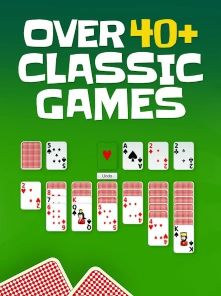
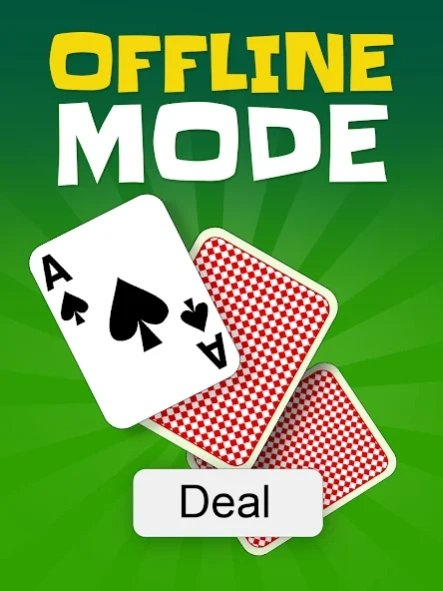
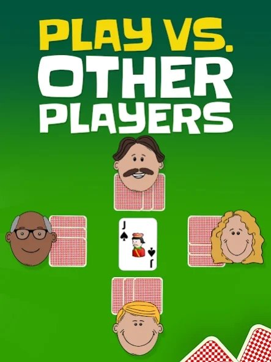

Introduction
CardGames.io is a premier browser-based platform offering a curated collection of classic card games, including Thirteen, Lockup, and Escoba. What makes it unique is its seamless, no-download accessibility combined with faithful recreations of traditional rulesets. Players love it because it brings the authentic feel of physical card games to their screens without the hassle of complex installations or intrusive ads. Whether you are shedding cards in Thirteen, avoiding clubs in the trick-taking game Lockup, or capturing combinations in Escoba, the platform provides a clean, intuitive interface. It caters to both casual players looking for a quick match and strategists seeking deep gameplay, making it a beloved digital destination for card game enthusiasts worldwide.
Getting Started

Starting your journey on CardGames.io is incredibly straightforward. Simply navigate to the official website using any modern web browser. You will be greeted by a clean lobby where you can select from various titles like Thirteen, Lockup, or Escoba. Once you choose a game, you can quickly set up a match by selecting the number of players—such as two to four for Escoba—and adjusting specific options, like toggling between a traditional Spanish deck or a modified French deck. Controls are entirely mouse-driven or touch-friendly for mobile users. To play, simply click or tap a card in your hand to select it, then click the target area on the table to execute your move. In Escoba, you will select cards that sum to fifteen to capture them. In Thirteen, you will play combinations like singles, pairs, or sequences. The interface automatically highlights valid moves and manages the draw piles, allowing you to focus entirely on your strategy during your very first game.
Basic Tips
To excel in CardGames.io, beginners should focus on these essential tips. First, in Escoba, always prioritize capturing the Seven of Oros (diamonds), as it is the most valuable card for scoring. Second, when playing Thirteen, try to play combinations that empty your hand quickly; playing a long sequence is often more efficient than dumping singles. Third, in Lockup, keep a close eye on the trump suit and avoid playing clubs unless absolutely forced, since the core objective is to avoid taking tricks containing them. Fourth, manage your table presence carefully in Escoba; if you leave cards summing to fifteen on the table, your opponent will easily capture them, so try to leave combinations that do not total fifteen. Finally, use the options menu to familiarize yourself with the specific deck variations, ensuring you understand the point values of court cards or number cards before the match begins.
Advanced Strategies

Experienced players on CardGames.io can elevate their gameplay with these advanced strategies. First, in Escoba, master the art of the sweep by deliberately leaving the table empty of fifteen-sum combinations, setting yourself up to capture all remaining cards on your next turn for an automatic point. Second, when playing Thirteen, memorize the shedding patterns of your opponents; if a player struggles with high sequences, deliberately play lower pairs to force them into a disadvantageous position. Third, in Lockup, utilize reverse psychology by intentionally playing high cards early to force opponents to take tricks, carefully counting the clubs played to ensure you are not the one left holding the bag when the suit is led. Fourth, in Escoba, track the discarded and captured cards meticulously. Since the deck is only forty cards, knowing exactly which high-value cards remain allows you to calculate the exact probabilities of your opponent making a capture, allowing you to play defensively and block their scoring opportunities effectively.
Pro Tips

To separate yourself from good players, implement these expert-level tips. First, in Escoba, intentionally sacrifice minor captures to maintain a poisoned table state, leaving combinations that look tempting but ultimately force your opponent to leave a fifteen-sum for you. Second, in Thirteen, hold onto your longest sequences until the late game to guarantee a massive hand-clearing finish. Third, in Lockup, track the exact distribution of clubs in the draw pile versus the hands; this card-counting technique allows you to deduce when an opponent is void in clubs, letting you safely force them to take the trick.
Conclusion
CardGames.io offers a fantastic, authentic digital experience for fans of classic card games. With its diverse collection featuring the shedding mechanics of Thirteen, the trick-avoidance of Lockup, and the mathematical captures of Escoba, there is always a new challenge waiting. Whether you are practicing basic strategies or mastering advanced card-counting techniques, the platform provides the perfect environment to test your skills. Jump in, shuffle the deck, and enjoy the timeless thrill of these beloved card games today!